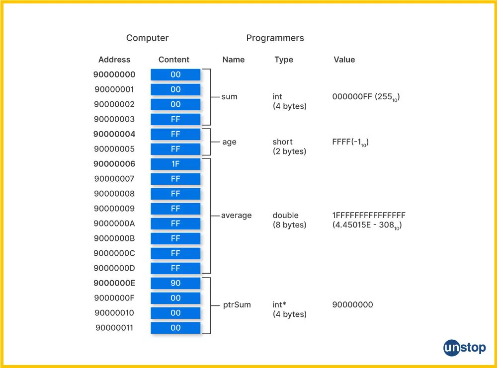
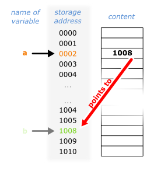
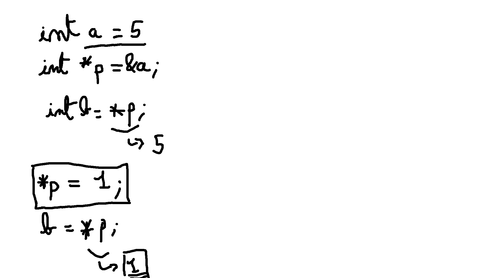
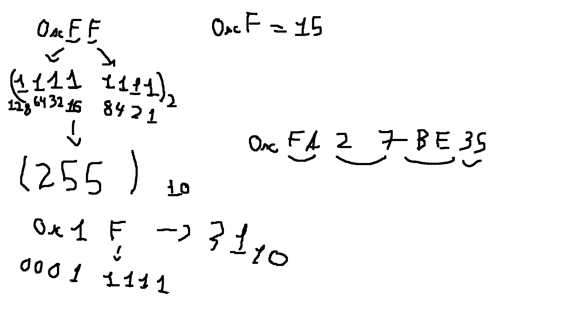

#include <stdio.h>
int main(void) {
int val = 42;
printf("Value: %d\n", val);
printf("Memory Address: %p\n", &val);
printf("Size in Bytes: %zu\n", sizeof(val));
return 0;
}
#include <stdio.h>
int main(void) {
int b = 42;
printf("Value: %d\n", b);
printf("Memory Address: %p\n", &b);
printf("Size in Bytes: %zu\n", sizeof(b));
// on va créer une variable pointeur `a` qui va pointer à l'adresse de `b`
int *a = &b;
printf("Valeur de a %p\n", a);
printf("Valeur de la valeur pointée par a: %d\n", *a);
return 0;
}On commence par déclarer et initialiser un entier b à
42. On imprime ensuite ça valeur avec
printf("Value: %d\n", b); Par la suite on s'intéresse à
l'adresse de b que l'on récupère avec
&b. On imprime aussi la taille
de b (en octets), donnée par
sizeof(b).
Après dans la deuxième partie du programme on crée une autre
variable. Il s'agit cette fois d'un pointeur que l'on nomme
a (il s'agit d'une variable de type
int *, c'est à dire un pointeur de type
entier). On imprime la valeur stockée dans a.
Celle-ci est en effet l'adresse de b. Enfin on s'interesse
à l'accès à la valeur de b mais indirecement, c'est à
dire en passant par son d'adresse. Pour le faire on
utilise l'opérateur de déréférencement *.
*a nous renvoie en effet la valeur de b mais
en passant par son adresse qui est elle contenue dans
a.


